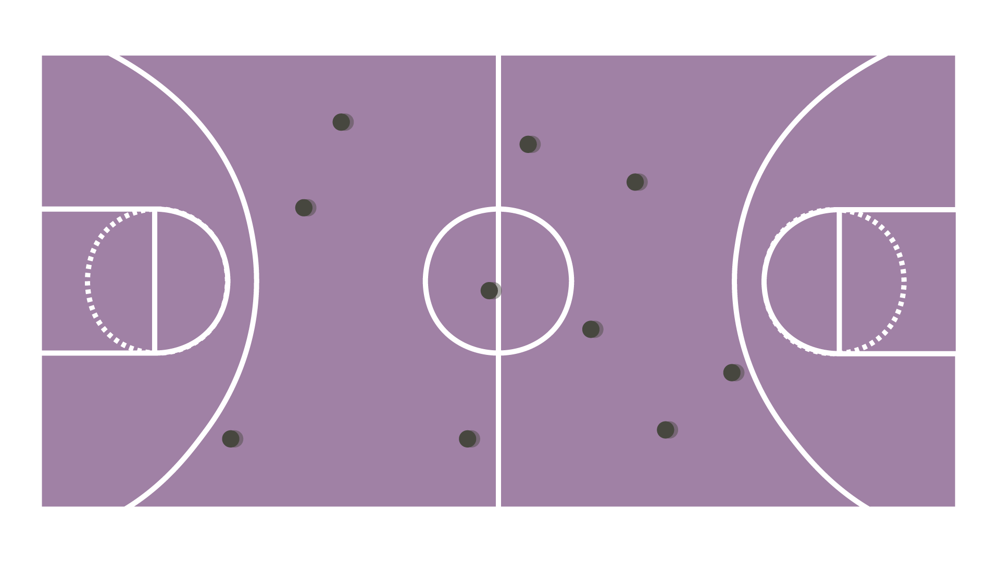
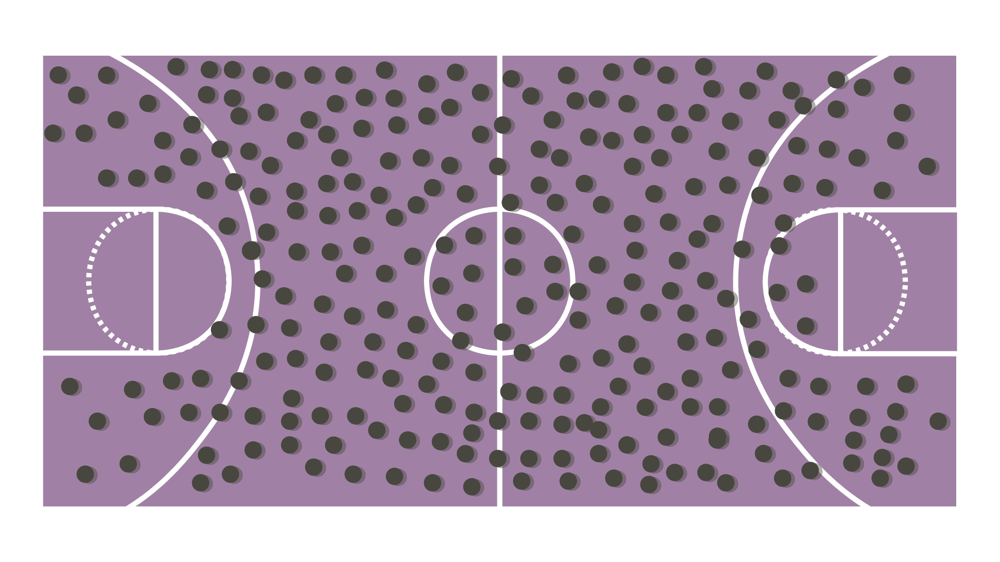
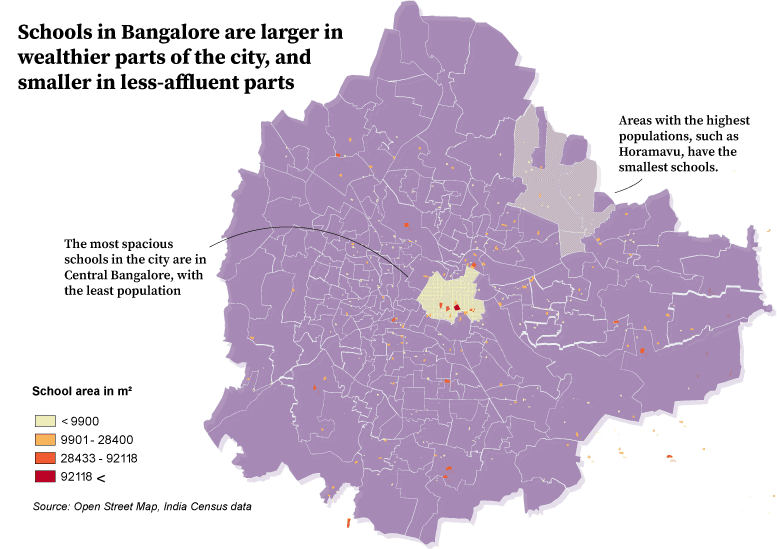

Rohith Paneer Selvam, 14, spends his evenings playing cricket with his friends on the narrow street in front of his home in Indiranagar, in eastern Bangalore. With residents’ cars parked on either side and the possibility of breaking a window, the boys have learnt to play with immense caution.
The constraints of playing a 17,000 square meter (m2) game on a narrow street are obvious. There is little room for the bowler to run before his serve and for the fielders to fetch the ball. Furthermore, their game is frequently interrupted by a passing vehicle or a pedestrian strolling by.
The boys don’t complain. They know it’s this way or nothing. The nearest playground is perpetually crowded, often with boys older than Rohith who do not accommodate other players. Many younger children on Rohith’s street do not step out to play at all.
Bangalore has seen a jump in its population over the last two decades and, like most densely populated cities in India, has a dearth of space for children to play. With public playgrounds being ill equipped to accommodate the entire neighborhood’s children and playing on streets raises safety concerns, often the only source of playtime a child receives is during their time in school.
However, schools in the city have few regulations in designing playground spaces, and many fall short in providing children with adequate space to play. A spatial study of Bangalore’s schools showed that out of 390 schools in the city, more than 65 have playgrounds with areas less than 800 m2, or the size of three tennis courts. The total area of all school grounds adds up to less than 3.5 million m². That’s roughly the total size of Manhattan’s Central Park.
Neighborhood differences
Manhattan has about 122,000 children aged between five and 14. Bangalore has 1.3 million.
To understand that better, let's look at the game of basketball. An ideal game of basketball is played with ten players on court.
The area of one basketball court is the playground space available for 192 children in Bangalore.
The schools with the largest playgrounds are in the center of the city, where few people live. According to the analysis, the most populous and less affluent parts in the Northeast regions of Hennur and Horamavu appear to have the smallest schools. To attend larger educational institutions outside the neighborhood, children commute for hours every day in Bangalore’s notorious traffic.
Studies have shown that larger school campuses, school buildings, and play areas are associated with higher levels of physical activity in middle school students. The provision of greater outdoor space per child has been associated with increases in break-time physical activity.
With little playtime incorporated in their daily schedules, children are prone to having vitamin deficiencies that stay with them through adulthood. The lack of exposure to social interaction and play also hinder their behavioral development. So long as schools have no regulations to adhere to while building classrooms and playgrounds, Bangalore’s children will have no room to play.
Methodology
To assemble a list of schools in Bangalore and obtain their playground areas, I used python to convert PDF files to text, clean and geocode the addresses of the schools. On QGIS, I used OpenStreetMap to determine all educational institutes and match it with my list of relevant schools, and calculated the area of each shape.